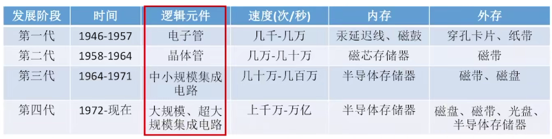

1-8计算机系统概况
1.1 计算机的发展
计算机系统=硬件+软件



1.2 计算机硬件的基本组成


缺点：数据必须通过运算器的转存，较为低效
所以现代计算机以存储器为中心


1.2.2认识硬件部件


数字计算机的最小信息单位是比特（bit，位），CPU向存储器取信息时，不能按位取，得按字或者字节。一个字节是8bit，一个“字”可以是一个或者多个字节。通常把组成一个字的二进制位数叫做字长。如果是两个字节组成的字，它的字长就是16位。
计算机字既可以表示指令，又可以表示数据。因此可分别成为“数据字”和“指令字”。一般来讲、取指周期中从内存读出的信息流是指令流，化流向控制器；而在执行周期中从内存读出或送入内存的信息流是数据流.它由内存流向运算器，或者由运算器流向内存。


将解题的程序（指令序列）存放在存储器中称为存储程序，而控制器依据存储的程序来控制全机协调地完成计算任务叫做程序控制.存储程序并按地址顺序执行，这就是冯•诺依曼型计算机的设计思想，也是机器自动化工作的关键.

1.2.3 计算机系统的层次结构

下层是上层的基础，上层是下层的拓展


1.3 计算机的软件
计算机软件一般分为两大类：一类叫系统程序，一类叫应用程序.
系统程序用来简化程序设计，筒化使用方法，提高计算机的使用效率，发挥和扩大计算机的功能及用途.它包括以下四类，(1)各种服务性程序，如诊断程序、排错程序、
练 习 程 序 等 ,(2)语言程序，如汇编程序、编译程序、解释程序等; (3)操作系统;(4)数据库管理系统.
应用程序是用户利用计算机来解决某些问题而编制的程序，如工程设计程序、数据处理程序、自动性制程序,企业管理程序、情报检索程序、科学计算程序等等.•随着计
算机的广泛应用，这类程序的种类越来越多.
| 机器语言（机器指令代码） | 手编程序/目的程序 |
|---|---|
| 汇编语言（规定的符号数字，依赖于具体机器） | 汇编程序（把汇编语言翻译成机器语言） |
| 算法语言（接近数学语言，与具体机器无关） | 源程序（要翻译：借助编译程序和运行系统（合称编译系统）/借助解释系统逐一解释语句） |
| 操作系统：批处理操作系统BPOS分时操作系统TSOS实时操作系统RTOS | 语言发展的方向是标准化，积木化，产品化，最终向自然语言发展，他们能够自动生成程序 |
1.4 性能指标


1.5 软件和硬件的逻辑等价性
然而，随着大规模集成电路技术的发展和软件硬化的趋势，要明确划分计算机系统软,硬件界限已经显得比较困难了.因为任何操作可以由软件来实现,也可以由硬件来实现；任何指令的执行可以由硬件完成,同样也可以由软件来完成.对于某一机器功能采用硬件方案还是软件方案，取决于价格、速度、可靠性、存储容量、变更周期等因素.
当研制一台计算机的时候，设计者必须明确分配撩一级的任务，确定哪些情况使用硬件，哪些情况使用软件，而硬件始终放在最低级.就目前而言,一些计算机的特点是：把原来明显地在一般机器级通过编制程序实现的操作，如整数乘除法指令、浮点运算指令、双精度运算指令、处理字符串指令等等，改为直接由硬件完成.总之，随着大规模集成电路和计算机系统结构的发展，实体硬件机的功能范围不断扩大.换句话说，第一级和第二级的边界范围，要向第三级乃至更高级扩展.这是因为容量大、价格低、体积小、可以改写的只读存储器提供了软件固化的良好物质手段.现在已经可以把许多复杂的、常用的程序制作成所谓固件，可以认为固件是一种介于传统的软件和硬件之间的实体.就它的功能来说，类似软件，但从形态来说，又类似硬件.其次，目前在一片硅单晶芯片上制作复杂的逻辑电路已经是实际可行的，这就为扩大指令的功能提供了物质基础.因此本来通过软件手段来实现的某种功能，现在可以通过硬件来直接解释执行.进一步的发展，就是设计所谓面向高级语言的计算机.这样的计算机，可以通过硬件直接解释执行高级语言的语句而不需要先经过编译程序的处理.因此传统的软件部分,今后完全有可能“固化”甚至“硬化。